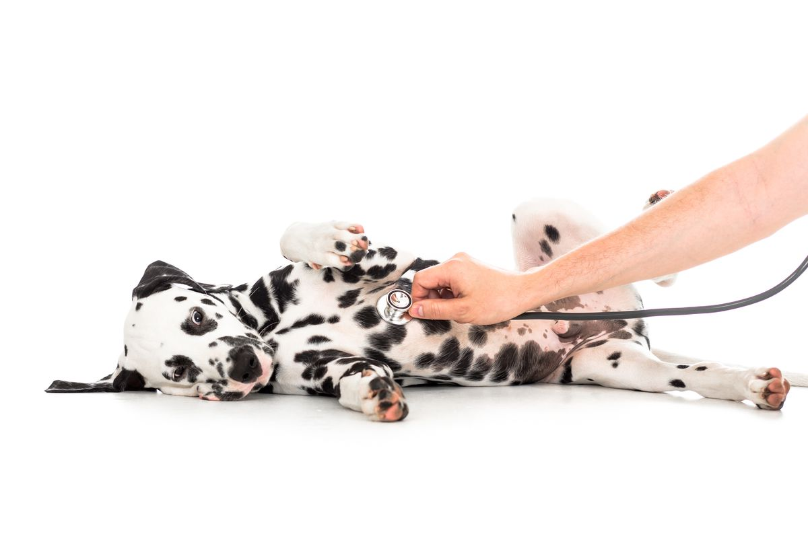
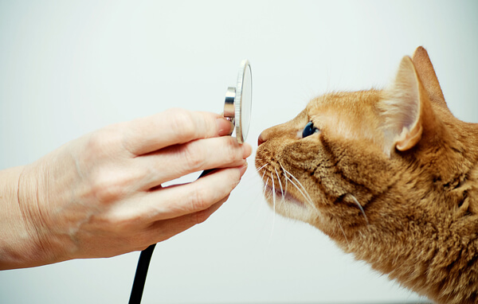
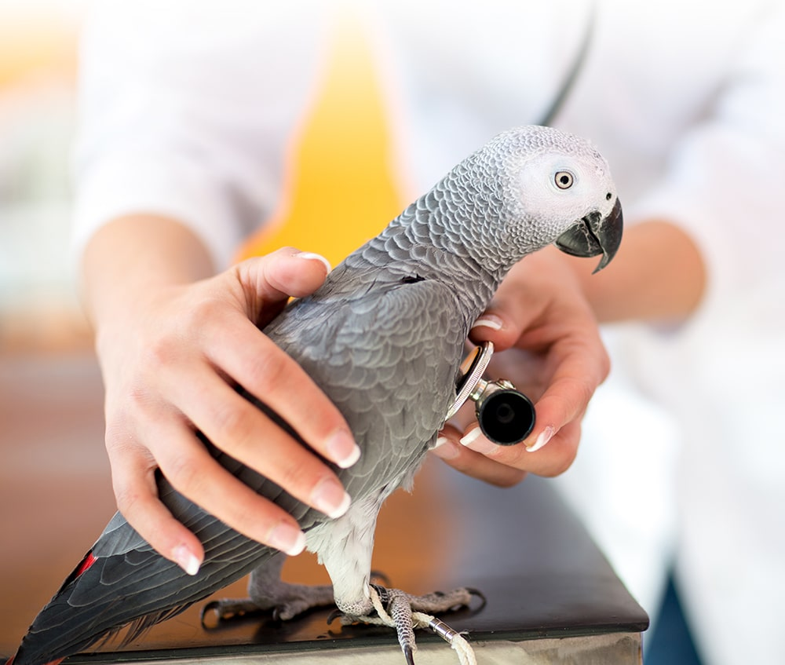
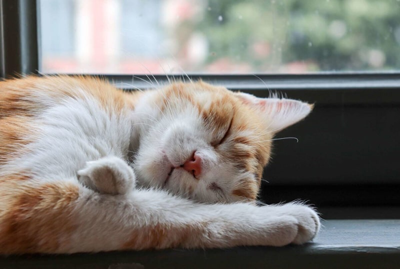
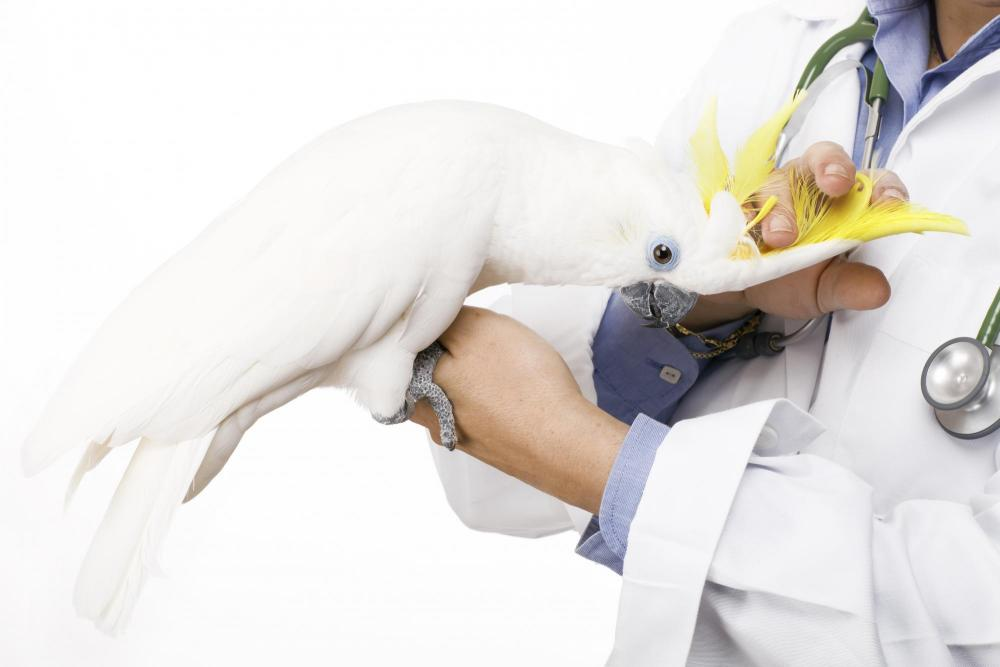
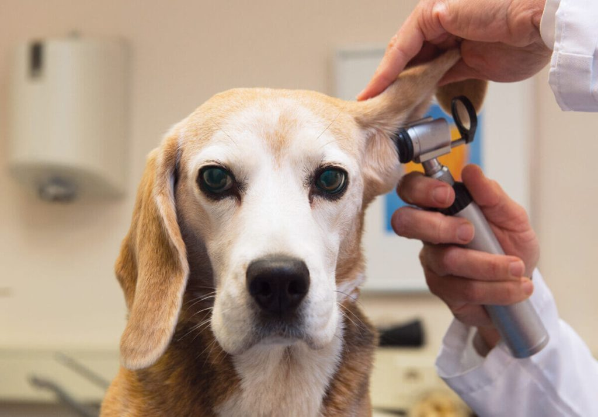
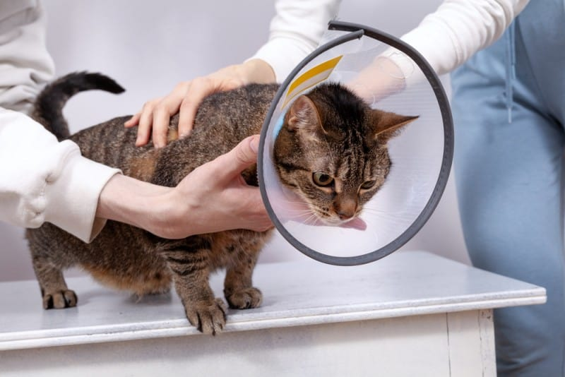
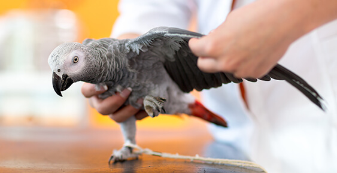
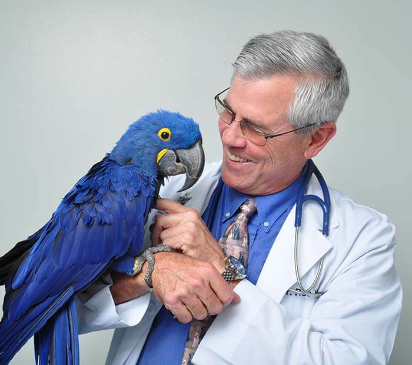

نگهداری از حیوانات خانگی همزمان با حال خوبی که برامون میاره مسئولیتهایی رو هم همراه خودش داره. بیمه حیوانات خانگی توی کم شدن هزینههای درمانی دامپزشکی تا حد زیادی کمک میکنه. توی این مطلب میخوایم ببینیم بیمه حیوانات خانگی چیه؟ حق بیمه حیوانات خانگی چقدره؟ مدارک لازم برای بیمه حیوانات چی چیزهایی هستن و مراکز دامپزشکی تحت پوشش بیمه رو هم بشناسیم.
آیا بیمه مسئولیت حیوانات خانگی لازم و ضروریه؟
بعضی از افراد معتقدن که پیشگیری بهتر از درمانه. جدی گرفتن چکآپ ها و انجام به موقع واکسیناسیون سگ و اهمیت دادن به نگهداری گربه و البته تزریق به موقع انواع واکسن گربه طبق برنامه تا حدی زیادی از بیمار شدنشون جلوگیری میکنه. اما میدونیم که بعضی از بیماریها قابل پیشگیری نیستن و هزینههای درمانشون گاهی سر به فلک میکشه. توی این شرایط بیمه کمک میکنه که بدون نگرانی از هزینههای درمان، هر کاری که لازمه رو انجام بدیم تا دوباره سلامتی و نشاط به زندگی حیوان خانگیمون برگرده.

بیمه حیوانات خانگی چیست؟
هزینههای نگهداری از حیوانات خانگی به تنهایی زیاده. حالا فرض کنید دوست پشمالتون به یه جراحی نیاز داره یا دچار بیماریی شده که پروسهی درمانش چندان آسون نیست. توی این شرایط بیمه حیوانات تا سقف مشخصی از درمان رو پرداخت میکنه و به سبک شدن هزینهها برای شما کمک زیادی میشه. توی ایران بیمه ایران، بیمه سامان و بیمه دانا هستن که طرح مشخصی رو به عنوان بیمه برای حیوانات خانگی در نظر گرفتن.
بیمه حیوانات خانگی شامل چه حیواناتی میشه؟
در حال حاضر میتونین سگ، گربه و پرندههای تزئینی مثل طوطی، کاسکو، مینا، فنچ، قناری و … رو تحت پوشش بیمه درمان حیوانات خانگی در بیارید.
البته بیمههای خاصی هم برای دامهای بزرگتر و حیواناتی مثل اسب وجود داره. اما تمرکز ما توی این مطلب روی بیمه درمانی برای دامهای کوچک و پرندگان تزئینی هست.

متاسفانه در حال حاضر داخل ایران، بیمهای که خرگوش و همستر و … رو تحت پوشش قرار بده نداریم.
مدت بیمهنامه چقدره؟
مدت بیمه نامه حیوانات خانگی در حال حاضر یک سال هست.

حق بیمه حیوانات خانگی چقدره؟
به مبلغی که در ازای دریافت خدمات بیمه به مرکز بیمه مورد نظرتون پرداخت میکنید حق بیمه میگن. حق بیمهی هر شرکت با شرکت دیگه متفاوته. مثلاٌ قیمت بیمه حیوانات خانگی تحت پوشش بیمه دانا بستگی به سن حیوان و طرح بیمهای که انتخاب میکنید داره.
در حال حاضر، حق بیمهای که بیمه دانا برای دریافت خدماتش در نظر گرفته به این شکل قبمتگذاری میشه که:
هرچه سن حیوان خانگی شما بیشتر باشه مبلغ پرداختی شما هم بیشتر میشه.
طرح بیمه حیوانات خانگی هم معمولاً به حداکثر میزان پرداخت شده یا سقف تعهد شرکت بیمه دانا گفته میشه.

اما بیمه سامان رویکرد متفاوتی داره. حق بیمه سالانه این بیمه نامه، مبلغ ۲.۷۲۵.۰۰۰ ریال با احتساب مالیتش هست و سقف تعهداتش رو توی جدول پایین میتونید ببینید
| تعهدات | شرایط | سقف تعهدات ( به ریال) |
|---|---|---|
| هزینه جراحی و بستری | سالانه | ۵۰.۰۰۰.۰۰۰ |
| هزینه تشخیص و درمان سرطان | حداکثر تا ۵۰ درصد تعهدات سالانه | ۲۵.۰۰۰.۰۰۰ |

مدارک لازم برای بیمه حیوانات چه چیزهایی هستن؟
برای اینکه بتونید حیوان خانگیتون رو تحت یکی از انواع بیمه حیوانات در بیارید، باید حیوانتون
- شناسنامه
- میکروچیپ
داشته باشه.

میکروچیپ چیه؟
میکروچیپ یه قطعه کوچیک به اندازهی برنج هست که برای شناسایی حیوانات توی بدنشون قرار میگیره. کاشت میکروچیپ شبیه به واکسیناسیونه و بدون درد انجام میشه. هر میکروچیپ یک کد اختصاصی داره که در تمام مراحل زندگی حیوان به عنوان عامل دقیق شناسایی اون استفاده میشن.
فایدهی دیگهای که میکروچیپ داره اینه که اگه به هر دلیلی حیوان خانگیتون گم شد، با وجود میکروچیپ توی بدنش احتمال پیدا شدنش خیلی بیشتر میشه.

مراحل انجام بیمه حیوانات خانگی
خب حالا که دوست کوچولوی شما هم شناسنامه و هم میکروچیپ داره، مرحلهی بعدی چیه؟
- مراجعه به یکی از دامپزشکان معتمد برای تکمیل فرم و صدور گواهی سلامت
- پرداخت حق بیمه و مالیات و عوارض به دامپزشک
- ارسال مدارک توسط دامپزشک به شعبه صادر کننده بیمه نامه
- صدور بیمه نامه توسط شعبه
- واریز حق بیمه توسط دامپزشک
- ارسال بیمه نامه به کلینیک و تحویل به بیمه گزار توسط دامپزشک
البته بعد از صدور گواهی سلامت، میتونید حق بیمه را در شعبه پرداخت و بیمه نامه رو تحویل بگیرید. این مراحل برای آسون شدن کار شما به عنوان بیمه گزار در نظر گرفته شدن.

برای دریافت گواهی سلامت و انجام مراحل درمانی حیوان خانگیتون باید به مراکز دامپزشکی تحت پوشش بیمه حیوانات مراجعه کنید. لیست مراکز دامپزشکی تحت پوشش بیمهی دانا رو آخر همین مقاله براتون آوردیم.
دوره انتظار بیمه درمانی حیوانات خانگی چیه و چقدر طول میکشه؟
شرکتهای بیمه معمولاً یه دوره زمانی رو در نظر میگیرن که توی اون مدت زمان تعهدی به جبران خسارت ندارن. به این معنی که اگه توی دوران انتظار مشکلی برای سگ یا گربه یا پرنده عزیزتون پیش بیاد، شرکت بیمه به شما چیزی پرداخت نمیکنه. به این مدت زمان دورهی انتظار میگن.
دورهی انتظار بیمه حیوانات برای بیمه سامان به طور مثال ۲ هفته و برای بیمه دانا یک ماه از زمان صدور بیمه نامه هست.

آیا برای بیمه کردن حیوانات خانگی محدودیت سنی هم وجود داره؟
باید بگیم که بله. اگه دفعه اوله که سگتون رو بیمه میکنید، سگ شما باید بیشتر از دو ماه و زیر هشت سال سن داشته باشه. این محدودیت سنی برای گربهها، به این صورته که گربه باید حداقل دو ماهه باشه و حداکثر زیر ده سال سن داشته باشه. بیمه طوطی و پرندگان تزئینی دیگه، شرط سنی نداره.
فرانشیز چیه؟
به سهمی که شرکت بیمه از خسارت به شما پرداخت میکنه فرانشیز میگن.
بیمه دامهای کوچک شامل چه مواردی میشه؟
فرانشیز به مواردی تعلق میگیره که توی بیمه نامه ذکر شده باشن. بعضی از بیماریهای گربه و همینطور بیماریهای سگ رو لابهلای لیست بیمه نامهها میتونید پیدا کنید. پس قبل از امضای بیمهنامه موارد مطرح شده رو با دقت مطالعه کنید.
ما مواردی که معمولاً به طور مشترک توی بیمهنامهها مطرح میشن رو براتون آوردیم.
مخارج جراحی و یا بستری
- تشخیص اولیه (ویزیت)
- آزمایشگاهی
- رادیوگرافی
- بیهوشی
- نسخ دارویی (براساس فهرست داروهای مجاز و مورد تائید سازمان دامپزشکی کشور)

هزینههای مربوط به درمان حوادث
- زخمهای ناشی از گازگرفتگی
- سوختگیها
- شکستگیها
- برق گرفتگی
- پارگی
- آسیب و ضربات وارده به بافت نرم
- پارگی تاندون
- پارگی زبان
- زخم ها و شرایط مزمن یا مداوم از قبیل حساسیتهای پوستی
هزینههای مربوط به درمان بیماریها
- آکنه
- آلرژیها
- آریتمی
- آسم
- عفونتهای مثانه
- برونشیت
- گرفتگی قلب
- کولیت (ورم مخاط روده بزرگ)
- اسهال، دیابت
- عفونت گوش
- سرماخوردگی
- گاستریت (التهاب معده)
- بیماری لایم
- هپاتیت
- مسمومیتها
- عفونتهای دستگاه تنفسی
- سینوزیت
- تومور

مخارج مرتبط به سرطان
- سرطان ریه
- سرطان تیرویید
- لنوسارکوم
- پوست (تومور مست سل)
- سرطان روده
- استخوان و لوسمی
هزینههای جراحی مربوط به سرطان
- تشخیص اولیه
- بیهوشی
- شیمی درمانی
- رادیو تراپی
- MRI
- رادیو گرافی کنتراست
- سونوگرافی (اولتراسوند)

هزینهی عقیمسازی سگ و گربه توسط بعضی از مراکز بیمه پوشش داده میشه.
بیمه پرندگان چه مواردی رو شامل میشه؟
- هزینههای جراحی های ناشی از حوادث و بیماریها
- هزینههای تشخیص اولیه (ویزیت)، آزمایشگاهی، رادیوگرافی (اولتراسوند)، بیهوشی
- نسخ دارویی مربوط به جراحی و بستری در بیمارستان
- هزینههای جراحی از جمله جراحی ناتوانی دفع تخم، پارگی ناشی از حمله حیوانات، سوختگی، جراحی جسم خارجی
- شکستگیها و زخمها

بیمه حیوانات خانگی شامل چه مواردی نمیشه؟
مواردی که شامل بیمه حیوانات نمیشن با توجه به مرکزی که بهش مراجعه میکنید متفاوته. این موارد توی قراردادی که بهتون میدن دقیق مطرح شده. پس قبل از امضا کردنش به این نکات توجه کنید. چند تا از مواردی که معمولاً بین مراکز بیمهای متفاوت، مشترک هستن رو براتون میگیم.

- شرایطی که از قبل از بیمه کردن حیوان وجود داشته باشه (جراحت یا بیماری که از قبل از شروع پوشش بیمه نامه وجود داشته)
- برخی شرایط دائمی مانند نقص عضو و یا عیوب و اختلالهای مادرزادی
- بیماری ناشی از عدم واکسیناسیون و یا عدم اجرای برنامه درمانی انگلی حیوان خانگی
- خسارتهای ناشی جنگ، شورش، اغتشاش، عملیات خصمانه و …
- انفجار اتمی و تشعشعات رادیو اکتیویته
- کلیه آسیبهایی که توسط یک شخص به صورت عمد به حیوان بیمه شده وارد شده باشه
- سرقت و مفقود شدن حیوان خانگیتون به هر شکل
- آسیب دیدن و یا تلف شدن حیوان ناشی از تغذیه نادرست و تزریق و استفاده از موارد نیروزا (دوپینگ)
- بیماری و تلف شدن حیوان ناشی از بیماریهای اپیدمی (واگیری همگانی )
- بیماریهای مشترک انسان و دام که از طریق مالک، افراد خانواده و یا هر انسان دیگری به حیوان منتقل شده باشه

مراکز دامپزشکی تحت پوشش بیمه حیوانات خانگی
خدمات بهترین کلینیکهای دامپزشکی معمولاً تحت پوشش بیمه حیوانات هستن. اما برای اطمینان بیشتر قبل از مراجعه به مرکزی که مد نظرتونه ازشون بپرسید تا مطمئن بشید که خدماتی که ازشون میگیرید تحت پوشش بیمهی شما قرار میگیرن.
تمام بیمارستانها و کلینیکهای داخل کشور تحت پوشش بیمهی سامان هستن.
بعضی از مراکزی که بیمهی دانا رو تحت پوشش دارن موارد زیر هستن:
| ردیف | مرکز دامپزشکی | شهر _ منطقه | تلفن |
|---|---|---|---|
| ۱ | دامپزشکی شهرک | تهران_ اکباتان | ۰۲۱۴۴۶۷۲۲۱۸ |
| ۲ | دامپزشکی زعفرانیه | تهران_ زعفرانیه | ۰۲۱۲۲۱۷۹۷۰۷ |
| ۳ | دامپزشکی دکتر مجید زاکریان | تهران_ پاسداران | ۰۲۱۲۲۵۷۰۷۰۰ |
| ۴ | بیمارستان دامپزشکی البرز | تهران_ ولنجک | ۰۲۱۲۲۱۷۲۴۲۱ |
| ۵ | دامپزشکی مهرگان | تهران_ ستارخان | ۰۲۱۴۴۲۳۳۴۲۰ |
| ۶ | دامپزشکی آرام | تهران_ پاسداران | ۰۲۱۲۲۵۵۰۹۳۲ |
| ۷ | دامپزشکی کژال | تهران_ بزرگراه جلال | ۰۲۱۸۸۰۰۲۰۲۸ |
| ۸ | دامپزشکی مینی کلینیک اول | تهران_ پیروزی | ۰۲۱۷۷۴۰۳۴۳۳ |
| ۹ | دامپزشکی آریان | تهران_ دروس | ۰۲۱۲۲۵۴۱۲۳۸ |
| ۱۰ | بیمارستان دامپزشکی درین | تهران_ رسالت | ۰۲۱۷۷۱۳۰۵۴۰ |
| ۱۱ | دامپزشکی دکتر سارا مکرم | تهران_ پیامبر غربی | ۰۲۱۴۴۰۱۷۷۸۴ |
| ۱۲ | دامپزشکی رویال | تهران_ آیت الله کاشانی | ۰۲۱۴۴۰۴۲۵۷۶ |
| ۱۳ | دامپزشکی پارسا | تهران_ سعادت اباد | ۰۲۱۲۲۰۷۵۷۸۶ |
| ۱۴ | دامپزشکی مازیار منشئی | اصفهان- خیابان آپادانا | ۰۳۱۳۶۴۱۳۰۲۳ |
| ۱۵ | دامپزشکی ایرانمهر | مشهد_بلوار وکیل آباد | ۰۵۱۳۸۸۱۷۸۰۰ |
| ۱۶ | دامپزشکی آریان | رشت_ گلسار | ۰۱۳۳۳۷۷۴۴۳۳ |
| ۱۷ | دامپزشکی مهرگان | کرمان_ چهارراه فرهنگیان | ۰۳۴۳۲۱۱۷۰۶۳ |
| ۱۸ | دامپزشکی شفا | کرمان_بلوار امام حسن مجتبی | ۰۳۴۳۲۱۱۸۰۹۵ |
| ۱۹ | دانشکده دامپزشکی | کرمان_ میدان افضلی پور | _ |
| ۲۰ | دامپزشکی آریا | کرمانشاه_ میدان ۱۷ شهریور | ۰۸۳۱۸۳۵۵۲۸۶ |
| ۲۱ | دامپزشکی پرشین | قزوین_ خیابان صنایع دستی | ۰۲۸۳۳۶۷۹۷۶۶ |
| ۲۲ | دامپزشکی دکتر پورحجتی | نوشهر_ میدان همافران | _ |
| ۲۳ | دامپزشکی آروانا | کرج_ گوهردشت | ۰۲۶۳۴۴۰۷۳۸۰ |
| ۲۴ | کلینیک دامپزشکی مرکزی کرج | کرج_ میدان نبوت | ۰۲۶۳۲۵۵۷۲۰۰ |
| ۲۵ | دامپزشکی هامون | هشتگرد_ بلوار والفجر | ۰۲۶۳۴۲۴۰۰۷۱ |
| ۲۶ | دامپزشکی خاطره مرکب سازی | تبریز_ ولیعصر | ۰۴۱۳۳۲۷۲۹۲۵ |
| ۲۷ | دامپزشکی دکتر تورج احمدیون | تبریز_ خیابان پروین اعتصامی | _ |
| ۲۸ | دامپزشکی دانا | شیراز_قدوسی شرقی | ۰۷۱۳۸۲۲۱۹۶۴ |
| ۲۹ | دامپزشکی دکتر منصور عنصری | ارومیه_خیابان دانشکده | ۰۴۴۱۳۴۶۳۷۵۴ |
نکات تکمیلی در مورد بیمه حیوانات خانگی
اگر حادثه یا بیماری متوجه سگ، گربه یا پرندهتون شد سریعاً به کلینیک یا دامپزشک مراجعه کنید و بعد هرچه سریعتر به شرکت بیمه اطلاع بدید.
یادتون باشه نهایتاً تا ۴۸ ساعت از تاریخ بروز حادثه یا ابتلا به بیماری باید به شرکت بیمه اطلاع بدید که چنین موردی پیش اومده.
البته بیمه سامان کمی این مدن زمان رو افزایش داده. اگر حیوان خانگی شما تحت پوشش بیمهی سامان هست حداکثر تا ۵ روز بعد از تاریخ بستری مهلت اعلام خسارت بهتون داده میشه.

سخن آخر
خب توی این مطلب، اطلاعات لازم در مورد بیمه حیوانات خانگی، شرایط و مدارک لازم و مراحل انجام بیمه مسئولیت حیوانات خانگی رو باهم بررسی کردیم. اگه سوالی دارید توی قسمت نظرات ازمون بپرسید بچههای تیم پت پرس با حوصله به تمام سوالات شما جواب میدن.
درود بر شما
ممنونم بابت توضیحات کاملی که در این بخش ارائه دادین ، بنده سارا صادقی هستم و سوالی دارم که هیچگونه ربطی به این بخش بیمه درمانی نداره.
دوست عزیز سوالم این هست که از چه طریقی ممکن هست که نگهدارنده حیوانات بتونن قبل از مراجعه به دکتر دامپزشک استعلام سوابق کاری و رضایت حقیقی دکتر مورد نظر خودش رو بگیره؟ ؟ جدای از به طور مثال گوگل مپ که بعد از سرچ در قسمت معرفی کلینیک یا بیمارستان نظرات مراجعه کنندگان رو میشه مطالعه کرد.
متاسفانه با کمی تحقیق میشه متوجه شد اکثر دوستداران حیوانات یا نگهدارندگان این فرشته ها در وحله اول ادب و نحوه برخورد کارکنان و پزشکان این مراکز هست که مهم هست و بیشتر جلب اعتماد و توجه رو میکنه و سپس مجرب و حرفهای بودن کارکنان و پزشکان و میزان موفقیت و تشخیص درست و درمان دامپزشک ؛ که در اینجا هیچگونه خرده ای نمیشه به این عزیزان گرفت چراکه در کشوری که مردمانش دارای حقوق شهروندی واقعی و انسانی نیستند چه برسه حیوانات زبان بسته ای که محکوم به زندگی در چنین کشور هایی. متاسفانه بنده بعد از خروج دکتر دامپزشکی که علارقم بدگویی و ایراداتی که در بخشی از فعالیت هایشان که هنوز مورد بحث است و ثابت نشده ، که بندهبا مراجعه به کلینیک ایشان در این دوازده سال در تشخیص، دلسوزی، مسئولیت پذیری، تعهدی که به این جانداران دوست داشتنی دارند رو دستشان ندیدم و متاسفانه بعد از خروج ایشان از کشور بنده نوعی خسارت های زیادی هم از نظر آسیب وارده به حیوان خانگیم، آسیب روحی به خودم و همسرم و مالی که در مقابل آسیب های دیگر ارزش چندانی ندارد با اینکه جزو قشر متوسط رو به پایین هستیم و بارها توان پرداخت هزینه برای خودمان را نداشتیم اما برای حیوان خانگی یا بهتر بگم همراه مهربان و دوستداشتنی کنارمون هرگز تا جای ممکنه دریغ
نکردیم. اما متاسفانه اعتماد نسبت به این جامعه دامپزشکی و تعاریفی که در سایت ها یا گوگل یا … تقریبا غلط است به نظر بنده و تجربه و ضربه هایی که خوردیم. متاسفانه دکتر دامپزشکی که به مراجعه کننده خودش به عنوان یک دستگاه پز نگاه میکنند و اگر لطف و مهربانی که با انسان همراه حیوان خانگی یا خود حیوان دارند ویترینی کاملا بی مسئولانه و غیر انسانی است. بنده به شخصه ترجیح میدم دکتر دامپزشکی که بهشون مراجعه میکنم بداخلاق باشند اما حرفه ای و کاربلد تا اینکه خوش برخورد و ناکارامد و بی مسئول ، بماند مراکزی که هم ناکارامد و غیر حرفه ای هستند و به مراجعه کننده توهین و بیادبی و یا در پشت درهای بسته حیوان آزاری!!😤😠😠
عذرخواهی میکنم بابت طولانی شدن مطلب اما در آخر هم اعلام میکنم مطمئنم هستند دامپزشکانی که بنده حقیر نه شناختی دارم و نه متاسفانه سعادت آشنایی داشتم که قطعا هم بسیار حرفهای و هم بسیار دلسوز و منصف هستند، که در اینجا هم خواهش میکنم و هم ممنون میشم که اگر دوستانی که به این صفحه مراجعه میکنند و اگر مطلب بنده به چشمشان خورد بنده رو بی نصیب نذارند از معرفی این دامپزشکآن مجرب و حرفه ای هرچند بداخلاق و چه بهتر که دلسوز و حرفهای و مهربان.
آدرس ایمیل بنده :
[email protected]
یا در صورت لطف شما شماره پیامک برای معرفی دامپزشک یا دامپزشکانی حرفه ای در تهران :
۰۹۰۱۲۳۵۸۱۵۱
سلام سارا صادقی عزیز
بله این مشکل متاسفانه هست. ما یه مقاله در این رابطه نوشتیم که میتونید از طریق لینک زیر مطالعه اش کنید، بهتون یه سر نخ هایی میده:
https://petpors.com/how-to-choose-the-best-pet-clinic/
سلام بیمه ای که هزینه واکسیناسیون رو پوشش بده کدومه و اینکه کاشت میکروچیپ حدودا هزینه چقدره
سلام این میکروچیپ یک موقع مثل این هایی که در فضای مجازی پره نباشه که بتونه حیوانات رو کنترل کنه یا بتونه هر کاری کنه ایا فقط برای حفاظت از اون هاست من که شک دارم پس نمیتونم بیمه کنم ولی از نظر من اضافه کردن همچین چیزی به بدن حیوانات خیلی کار اشتباهی هست
سلام دوست عزیز ، خیر این طور نیست میکروچیپ در داخل محفظه شیشه ای که قابلیت تطابق با بافت زنده موجود را دارد قرار می گیرد این محفظه از ایجاد واکنش های ایمنی جاندار جلوگیری می نماید و میکروچیپ تا انتهای عمر جاندار در بدن بدون هیچ گونه عارضه ای باقی می ماند همچنین احتمال یافتن حیوانات گم شده ای که دارای میکروچیپ هستند بسیار بیشتر از حیواناتی است که فاقد آن هستند و شناسنامه ی حیوونتون محسوب میشه و در همه جای دنیا استفاده میشه.